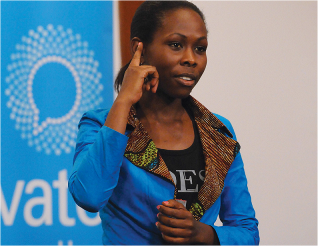
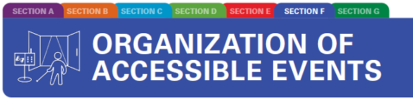

TOOLKIT ON ACCESSIBILITY

Tools to apply universal design across premises and programmes and promote access for all


2
Tools to apply universal design across premises and programmes and promote access for all

Tools to apply universal design across premises and programmes and promote access for all
© United Nations Children’s Fund (UNICEF) February 2022
Email: disabilities@unicef.org
Cover photo: © UNICEF/UNI163099/Markisz
Email: disabilities@unicef.org
Editor and copy editor: Fabienne Stassen, EditOr Proof
Layout and graphic design: Big Yellow Taxi, Inc.
Web designer: Elias Constantopedos
Accessible formats: Prashant Ranjan Verma
4The toolkit is divided into seven sections and one Toolbox:


SECTION F: ORGANIZATION OF ACCESSIBLE EVENTS: suggestions on how to organize accessible events

SECTION G: ACCESSIBILITY CHECKLISTS: 17 checklists to use during accessibility assessments

Dr Omar Abdi, UNICEF Deputy Executive Director, Programmes:
Hannan Sulieman, UNICEF Deputy Executive Director, Management:
6
The toolkit is divided into seven sections and one Toolbox:
To summarize, information can be used at different points in the accessibility journey, such as:
This toolkit contributes to the implementation of the United Nations Disability Inclusion Strategy and helps to achieve and exceed most of the strategy’s indicators: lack of physical accessibility, specifically recognized as one of the barriers to inclusion in Indicator 6 on Accessibility, 6.1 on Accessibility of conferences and events, Indicator 7 on Reasonable accommodation and Indicator 5 on Consultation with persons with disabilities. The toolkit helps to report on United Nations Country Team scorecards and to build the capacity of implementing partners on accessibility.
Convention on the Rights of Persons with Disabilities
The Convention on the Rights of Persons with Disabilities (CRPD) 1 is an international human rights treaty of the United Nations intended to protect the rights and dignity of persons with disabilities. It was adopted on 13 December 2006 and describes human rights frameworks linked to accessibility, aspects of universal design, reasonable accommodation and international standards for accessibility. UNICEF’s existing commitments and policies to promote accessibility are aligned with the CRPD.
In the 1980s, the American architect Ron Mace coined the term ‘universal design’, which means good design that benefits everyone. 2 Universal design is defined in the CRPD as “the design of products, environments, programmes and services to be usable by all people, to the greatest possible extent, without needing adaptation or specialized design” (article 2). 3
12Seven principles underpin the concept of universal design, summarized as follows:
Four steps ensure the accessibility continuum: reaching a facility; entering a facility; moving around a facility; and using specific features of a facility. 4 These align with the RECU methodology that stipulates that accessible facilities should be easy to reach, enter, circulate and use. 5
14 15Other considerations to promote inclusion include:
16For UNICEF programmes, ISO 21542 can be applied to all construction-related activities. While dimensions in the standard are geared primarily towards adults, it also recognizes that people across age levels have different needs, so it incorporates, for example, accessibility in toilets designed for children. In addition, accessibility for children is considered in this toolkit based on other existing guidelines and principles. 6
As part of the Sustainable Development Goal (SDG) framework, 7 accessibility of the built environment is referred to explicitly in the targets and indicators for:


Goal 11 – Make cities and human settlements inclusive, safe, resilient and sustainable

The New Urban Agenda emphasizes the importance of process and implementation in a “participatory manner”, which considers “innovative, resource-efficient, accessible, context-specific and culturally sensitive sustainable solutions”. 8
In 2018, as a follow-on to the Habitat III conference, the World Urban Forum in Malaysia issued the Kuala Lumpur Declaration, with an explicit paragraph on universal design, committing governments to “adopt accessibility and universal design as core principles into national, subnational and local action plans for implementing the New Urban Agenda through inclusive, accessible and participatory processes and consultations”. 9
During the twelfth Conference of States Parties to the Convention on the Rights of Persons with Disabilities, United Nations Secretary-General António Guterres launched the United Nations Disability Inclusion Strategy (UNDIS).
19This executive directive supplements the existing requirements for the accessibility of premises in Property and Equipment Policy, Supplement 6 – Guidelines for Premises Management and the UNICEF Greening and Accessibility Fund (GrAF) procedures. The GrAF was established in 2015, generated by a 3 per cent air travel surcharge, with 2 per cent of the fund to be used to finance eco-efficiency projects and 1 per cent to be used for accessibility projects (see also Section D of the toolkit).
20
Organization of accessible events
SECTION F of this toolkit describes key considerations for creating accessible and inclusive events.
Part 2 details specific actions that must be performed to ensure the accessibility of an event.
An event is composed of three phases that have different needs in terms of accessibility:
Examples of accessibility considerations for a conference throughout the three phases include:
Examples of accessibility considerations for a training session throughout the three phases include:
NOTE: It is important to brief facilitators and make sure they know the basic skills for communicating with children and adults with disabilities. 10
Awareness-raising session with communities
28
If case of doubt concerning the most effective arrangements, devices or assistive technology or services, ask for advice from OPDs 12 or staff working on disability and inclusion.
For further details on what to check, please refer to the dedicated checklists in Section G of this toolkit.
31TIP: UNICEF’s ‘Inclusive Communication Module’ video format 13 incorporates accessibility features such as sign language interpretation, audio description and closed captioning, as well as training on how to develop materials and organize meetings that are inclusive of and accessible to people with disabilities.
32To support participation on an equal basis, it is important to provide information in accessible formats, such as DAISY, EPUB, HTML or easy-to-read formats. It is also important to make sure that all videos that are screened include captions. More information is available in UNICEF’s short guide on making events accessible. 14
TIP: Additional information is provided in UNICEF Disability Orientation 15 as well as in checklist 6 (reception areas) in this toolkit.
Questions in follow-up evaluations or as part of standard feedback should include:
For tips on conducting accessible virtual meetings, see the Stakeholder Group of Persons with Disabilities for Sustainable Development checklist.
361. For more information, including the full text of the CRPD in multiple languages and the list of countries that have ratified it, see United Nations, Department of Economic and Social Affairs, Disability, Convention on the Rights of Persons with Disabilities (CRPD), United Nations, New York, 2006, <www.un.org/development/desa/disabilities/convention-on-the-rights-of-persons-with-disabilities.html> , accessed 7 September 2021. ↩︎
2. Ronald L. Mace Universal Design Institute (UDI), ‘A Brief History of Universal Design’, UDI, 2018, <www.udinstitute.org/ud-history> , accessed 7 September 2021. ↩︎
3. United Nations, Convention on the Rights of Persons with Disabilities, United Nations, New York, 2006, article 2, <www.un.org/development/desa/disabilities/convention-on-the-rights-of-persons-with-disabilities/article-2-definitions.html> , accessed 7 September 2021. ↩︎
4. These considerations are covered for each type of facility in the accessibility checklists ( Section G ). ↩︎
5. For more information on RECU, see Plantier-Royon, Eric, Priscille Geiser and Hugues Nouvellet, ‘Accessibility: How to design and promote an environment accessible to all’, Policy Brief 2, Handicap International (now Humanity for Inclusion), Lyon, 2009, <https://handicap-international.ch/sites/ch/ files/documents/files/accessibilite_anglais.pdf>, accessed 17 February 2022. ↩︎
6. See, for example, United Nations Children’s Fund, Accessible Components for the Built Environment: Technical Guidelines embracing Universal Design, UNICEF, New York, <https://docplayer. net/73698977-Accessible-components-for-the-built-environment-technical-guidelines-embracing- universal-design.html> , accessed 29 October 2021. ↩︎
7. For the complete set of SDGs, targets and indicators, see United Nations, Department of Economic and Social Affairs, Sustainable Development, ‘Make the SDGs a Reality’, United Nations, New York, <https://sustainabledevelopment.un.org> , accessed 29 October 2021. ↩︎
8. United Nations, United Nations Conference on Housing and Sustainable Urban Development, ‘New Urban Agenda’, United Nations, Ecuador, 2017, open PDF, paras. 37, 52, 53, 119, <http://habitat3.org/wp-content/uploads/NUA-English.pdf> , accessed 29 October 2021. ↩︎
9. United Nations, World Urban Forum, ‘Kuala Lumpur Declaration on Cities 2030’, United Nations, Kuala Lumpur, 13 February 2018, <https://unhabitat.org/sites/default/files/2018/04/Agenda-10-WUF9-KL-Declaration-English-1.pdf> , accessed 29 October 2021. ↩︎
10. For more information, see United Nations Children’s Fund, ‘Take Us Seriously! Engaging Children with Disabilities in Decisions Affecting their Lives’, UNICEF, New York, June 2013, <https://sites. unicef.org/disabilities/files/ Take_Us_Seriously.pdf> , accessed 17 September 2021. ↩︎
11. Reasonable accommodation: necessary and appropriate adjustments (e.g., screen-reader, personal support worker, sign language interpreter) that do not impose a disproportionate or undue burden on the event organizer and ensure persons with disabilities can exercise all of their human rights and fundamental freedoms, and on an equal basis with others. ↩︎
12. See, for example, International Disability Alliance, ‘IDA Members’, <www. internationaldisabilityalliance.org/content/ida-members> , accessed 17 September 2021. ↩︎
13. For more information, see UNICEF, ‘Disabilities – Inclusive Communication Module’, <www.unicef. org/disabilities/index_90418.html> , accessed 17 September 2021. ↩︎
14. United Nations Children’s Fund, ‘Making your events accessible: Draft quick guide (#3) for UNICEF staff and partners’, UNICEF, New York, 2018, <https://sites.unicef.org/disabilities/files/Making_ events_accessible_short_guide.docx> , accessed 17 September 2021. ↩︎
15. For more information, see UNICEF, ‘Disability Orientation’, <https://sites.unicef.org/disabilities/ index_66434.html> , accessed 29 September 2021. ↩︎
16. Adapted from International Organization for Standardization, ‘ISO 21542:2011 Building construction – Accessibility and usability of the built environment’, Introduction and para. 3.2, <www.iso.org/obp/ui/ fr/#iso:std:iso:21542:ed-1:v1:en:sec:11> , accessed 17 September 2021. ↩︎
17. International Organization for Standardization, ‘ISO 21542:2011 Building construction – Accessibility and usability of the built environment’, para. 3.4, <www.iso.org/obp/ui/#iso:std:iso:21542:en> , accessed 17 September 2021. ↩︎
ORGANIZATION OF ACCESSIBLE EVENTS
© United Nations Children’s Fund (UNICEF) February 2022
United Nations Plaza, New York, NY, 10017, USA
Email: disabilities@unicef.org
The accessibility toolkit is available at: https://accessibilitytoolkit.unicef.org/